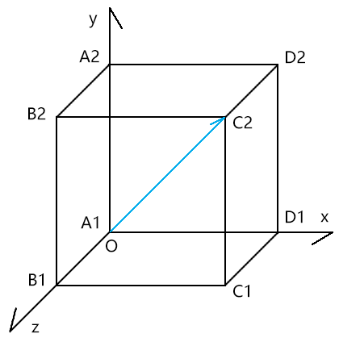
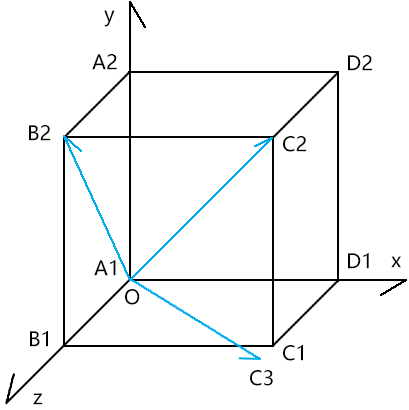
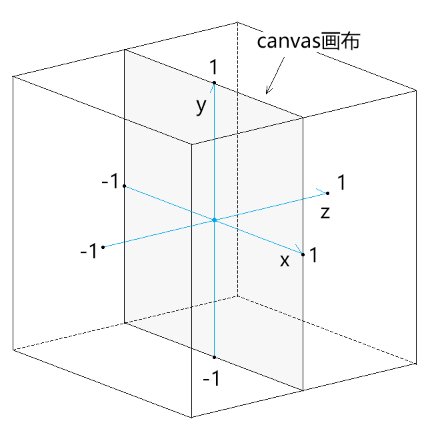
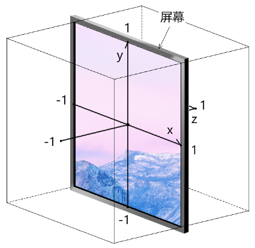
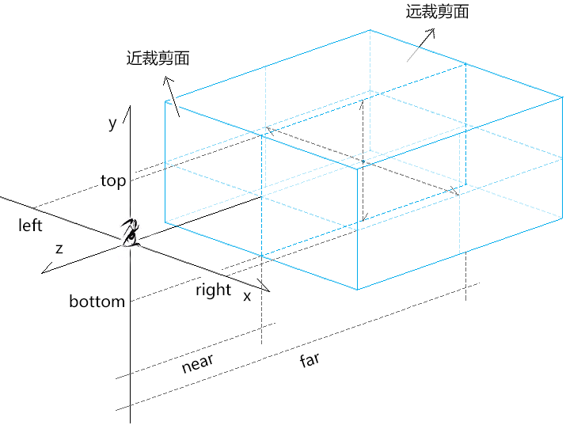
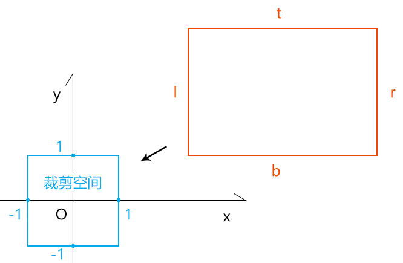
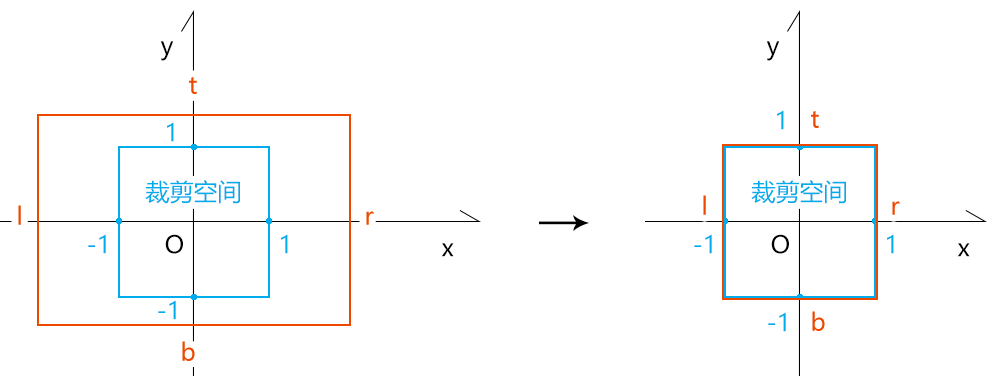
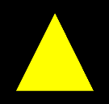
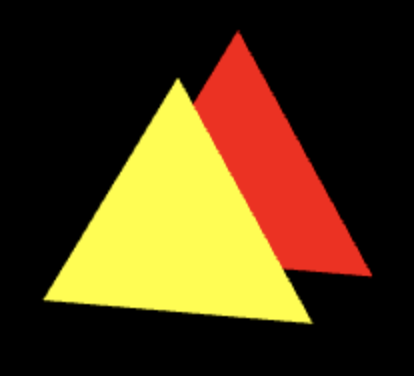

前言
佛曰：一花一叶一世界，一草一木一浮生。
在webgl的三维世界里亦是如此，因为它本身就是对真实世界的映射。
当我们对向量的各种运算得心应手的时候，我们便可以在一个世界里自由变换。
当我们对矩阵的各种运算得心应手的时候，我们便可以看见那一花一叶里的世界，望穿那天外的星罗万象。
我们前几章所说的知识，大部分都是二维的。
虽然在说矩阵的时候，给大家说过模型矩阵和视图矩阵，但那是从矩阵算法的角度来看三维世界的。
接下来这一篇，我们就真正的进入三维世界。
课堂目标
- 自由变换三维物体
- 以用户视角进入三维世界
- 控制三维可视空间
- 处理物体的前后关系
- 绘制三维物体
知识点
- 世界坐标系
- 本地坐标系
- 欧拉旋转
- 四元数旋转
- 模型矩阵
- 视图矩阵
- 投影矩阵
第一章 世界坐标系和本地坐标系
1-基本概念
我们既然要进入三维世界，必须要先有坐标系的概念，而不要只想着如何让物体飞天遁地。
坐标系按照层级分为：
- 世界坐标系
- 本地坐标系
当然，坐标系还可以按照类型来分，比如：直角坐标系、极坐标系等，这不是我们这篇要说的重点。
接下来，我们重点来说世界坐标系和本地坐标系。
我通过一个神的传说，给大家引出世界坐标系和本地坐标系的概念。
天地混沌之时，宇宙只是一个蛋。
这个蛋之所在，就是世界坐标系的原点所在。
十万八千年后，盘古一斧将蛋劈开，这个蛋没了，宇宙也变得无穷无尽了，其中万物初生，世界坐标系里的坐标轴也应运而生，以此定位万物。
然则，宇宙之中，无论是日月星辰，还是花鸟鱼虫，它们皆可自成一界，在这一界中，它们都有着自己的坐标系。
比如：
北京在东经116°20′、北纬39°56′ 上，这个位置就是北京在地球的本地坐标系里的位置。
那北京在宇宙里的世界坐标位是什么呢？这需要知道宇宙的坐标原点在哪里。
至于宇宙的坐标原点在哪里，我就不再做深度探讨了，不然能扯到释迦摩尼的缘起性空和爱因斯坦的相对论上去。
接下来拿变换举例子。
2-认识世界坐标系、本地坐标系中的点位关系
已知：
- 世界坐标系[O1;i1,j1,k1]
- 点P
- 点P所处的本地坐标系是[O2;i2,j2,k2]
- 世界坐标系[O1;i1,j1,k1]∋本地坐标系[O2;i2,j2,k2]
解释一下：
[O;i,j,k]中：
- O 是坐标原点
- i,j,k 是坐标向量
这是空间直角坐标系的书写方式，大家可在高中数学的空间几何部分找到。
初学three.js 的同学，往往很难玩转其中矩阵变换、欧拉、四元数、世界坐标位、本地坐标位等。
若大家把我当前所说的这块搞懂了，可以攻克一个很重要的难点。
接下我们继续围绕点P 来说事。
提问1：
我说点P 的坐标位是(x,y,z)，可否找到点P？
答：不可。
因为我没说(x,y,z) 是在世界坐标系[O1;i1,j1,k1]里的位置，还是在本地坐标系是[O2;i2,j2,k2]里的位置。
提问2：
点P 的世界坐标位是(x,y,z)，可否找到点P？
答：可
接下来我们说重点啦。
提问3：
点P 的本地坐标位是(x,y,z)，可否找到点P？若可以，求点P的世界位。
答：可
解点P的世界位：
根据空间向量分解定理。
由世界坐标系[O1;i1,j1,k1]可解析出四维矩阵m1：
[
i1.x,j1.x,k1.x,0,
i1.y,j1.y,k1.y,0,
i1.z,j1.z,k1.z,0,
O1.x,O1.y,O1.z,1
]
同理，由本地坐标系[O2;i2,j2,k2]可解析出四维矩阵m2：
[
i2.x,j2.x,k2.x,0,
i2.y,j2.y,k2.y,0,
i2.z,j2.z,k2.z,0,
O2.x,O2.y,O2.z,1
]
点P的世界位是：
m1*m2*(x,y,z)
对于我上面的说法对不对，大家一定要保持怀疑的态度，用批判否定的眼光看问题，不唯上，不唯书，只为实。
第二章 深入认知三维世界
接下来，我们借助three.js 来验证我们的推理。
若我们之前的推理和three.js 里的一致，那就基本没问题了，毕竟这种底层原理，在three.js 里一般是不会错的。
1-用位移矩阵做实验
1-1-示例
已知：
- 宇宙universe
- 宇宙的本地坐标系是[O1;i1,j1,k1]
- O1(0,0,0)
- i1(1,0,0)
- j1(0,1,0)
- k1(0,0,1)
- 宇宙包含万物，其本地坐标系就是万物的世界坐标系
- 银河系galaxy
- 银河系的本地坐标系是[O2;i2,j2,k2]
- O2(1,2,3)
- i2(1,0,0)
- j2(0,1,0)
- k2(0,0,1)
- 太阳sun
- 太阳在银河系内的本地坐标位是P2(4,5,6)
- 太阳∈银河系∈宇宙
求：太阳的世界位P1
解：
由宇宙坐标系[O1;i1,j1,k1]解矩阵m1：
[
1,0,0,0,
0,1,0,0,
0,0,1,0,
0,0,0,1
]
由银河系[O2;i2,j2,k2]解矩阵m2:
[
1,0,0,0,
0,1,0,0,
0,0,1,0,
1,2,3,1
]
点P的世界坐标位是：
P1=m1*m2*(4,5,6)
P1=(1+4,2+5,3+6)
P1=(5,7,9)
接下来我们拿three.js验证一下
1-2-验证
1.从three.js 中引入我们要用到的方法
import { Group, Matrix4, Object3D,Scene, Vector3, } from 'https://unpkg.com/three/build/three.module.js';
2.基于世界坐标系和本地坐标系构建矩阵
//世界坐标系-宇宙
const m1 = new Matrix4()
m1.elements = [
1, 0, 0, 0,
0, 1, 0, 0,
0, 0, 1, 0,
0, 0, 0, 1
]
//本地坐标系-银河系
const m2 = new Matrix4()
m2.elements = [
1, 0, 0, 0,
0, 1, 0, 0,
0, 0, 1, 0,
1, 2, 3, 1
]
3.声明太阳在银河系内本地坐标P2
//本地坐标位-太阳
const P2 = new Vector3(4, 5, 6)
4.创造一个宇宙
const universe = new Scene()
universe.applyMatrix4(m1)
applyMatrix4() 通过四维矩阵赋予对象坐标系
5.同理，创造银河系
//银河系
const galaxy = new Group()
galaxy.applyMatrix4(m2)
6.创造太阳
const sun = new Object3D()
sun.position.copy(P2)
太阳的position属性便是其在银河系中的相对位
7.宇宙、银河系和太阳的包含关系：太阳∈银河系∈宇宙
galaxy.add(sun)
universe.add(galaxy)
8.计算太阳的在宇宙中的世界位
const P1 = new Vector3()
sun.getWorldPosition(P1)
console.log(P1);
//{x:5,y:7,z:9}
这个结果和我们之前推理的是一样的。
接下来咱们借此深度探究一下位移的法则。
2-位移法则
如果我们不想求太阳的位置，而是想求太阳系内的地球的位置，那是否还可以按照我们之前的思路来求解？
答案是肯定的。
2-1-示例
调整一下之前的已知条件。
把太阳改成太阳系solar
太阳系的本地坐标系是[O3;i3,j3,k3]
- O3(4,5,6)
- i3(1,0,0)
- j3(0,1,0)
- k3(0,0,1)
地球earth
地球在太阳系内的本地坐标位是P3(7,8,9)
地球∈太阳系∈银河系∈宇宙
求：地球的世界坐标位P1
解：
由太阳系的本地坐标系可得矩阵m3：
[
1, 0, 0, 0,
0, 1, 0, 0,
0, 0, 1, 0,
4, 5, 6, 1
]
求地球的世界坐标位P1：
P1=m1*m2*m3*(7,8,9)
P1=(1+4+7,2+5+8,3+6+9)
P1=(12,15,18)
2-2-验证
按照之前的原理用three.js验证一番：
import { Group, Matrix4, Object3D, Scene, Vector3, } from 'https://unpkg.com/three/build/three.module.js';
//世界坐标系-宇宙
const m1 = new Matrix4()
m1.elements = [
1, 0, 0, 0,
0, 1, 0, 0,
0, 0, 1, 0,
0, 0, 0, 1
]
//本地坐标系-银河系
const m2 = new Matrix4()
m2.elements = [
1, 0, 0, 0,
0, 1, 0, 0,
0, 0, 1, 0,
1, 2, 3, 1
]
//本地坐标系-太阳系
const m3 = new Matrix4()
m3.elements = [
1, 0, 0, 0,
0, 1, 0, 0,
0, 0, 1, 0,
4, 5, 6, 1
]
//本地坐标位-地球
const P3 = new Vector3(7, 8, 9)
//宇宙(世界坐标系是宇宙的本地坐标系)
const universe = new Scene()
universe.applyMatrix4(m1)
console.log(universe.position)
console.log(universe.matrix)
//银河系
const galaxy = new Group()
galaxy.applyMatrix4(m2)
//太阳系
const solar = new Group()
solar.applyMatrix4(m3)
//地球
const earth = new Object3D()
earth.position.copy(P3)
//包含关系
solar.add(earth)
galaxy.add(solar)
universe.add(galaxy)
//点P的世界位
const P1 = new Vector3()
earth.getWorldPosition(P1)
console.log(P1);
//{x: 12, y: 15, z: 18}
2-3-推理
我们可以从上面的结论中得到一个规律：
当一点P和宇宙之间存在n层嵌套
点P的本地坐标位是Pn
第n层世界的本地坐标系所对应的矩阵是mn
则点P的世界位P1是：
P1=m1*m2*……*mn*pn
上面的公式，我们就暂且叫它“本地坐标转世界坐标公式”了，我不知其有没有学名，就先这么叫着了。
接下来，我们再思考一个问题。
之前我们对所有坐标系只是进行了位移操作，那如果我们对其做了缩放和旋转操作，上式是否成立呢？
3-缩放法则
3-1-示例
修改之前已知条件：
在银河系的本地坐标系[O2;i2,j2,k2]中，让j2是单位向量的2倍：
- O2(1,2,3)
- i2(1,0,0)
- j2(0,2,0)
- k2(0,0,1)
在太阳系的本地坐标系[O3;i3,j3,k3]，让k3是单位向量的3倍：
- O3(4,5,6)
- i3(1,0,0)
- j3(0,1,0)
- k3(0,0,3)
求：地球的世界坐标位P1
解：
由银河系的本地坐标系可得矩阵m2：
[
1, 0, 0, 0,
0, 2, 0, 0,
0, 0, 1, 0,
1, 2, 3, 1
]
由太阳系的本地坐标系可得矩阵m3：
[
1, 0, 0, 0,
0, 1, 0, 0,
0, 0, 3, 0,
4, 5, 6, 1
]
求地球的世界坐标位P1：
P1=m1*m2*m3*(7,8,9)
m1*m2*m3=[
1, 0, 0, 0,
0, 2, 0, 0
0, 0, 3, 0
4+1,2*5+2,6+3,1
]
m1*m2*m3=[
1,0, 0,0,
0,2, 0,0,
0,0, 3,0,
5,12,9,1
]
P1=(7+5,16+12,27+9)
P1=(12,28,36)
3-2-测试
基于“位移法则”的three.js代码改改：
//本地坐标系-银河系
const m2 = new Matrix4()
m2.elements = [
1, 0, 0, 0,
0, 2, 0, 0,
0, 0, 1, 0,
1, 2, 3, 1
]
//本地坐标系-太阳系
const m3 = new Matrix4()
m3.elements = [
1, 0, 0, 0,
0, 1, 0, 0,
0, 0, 3, 0,
4, 5, 6, 1
]
运行代码，可得到和我们刚才计算的一样的结果。
由此可见，当坐标系发生缩放时，本地坐标转世界坐标公式依旧成立
接下咱们再说旋转。
4-旋转法则
4-1-示例
修改之前已知条件：
让银河系的本地坐标系[O2;i2,j2,k2]绕j2轴逆时针旋转20°。
设：c2=cos(-20°)，s2=sin(-20°)
则：
- O2(1,2,3)
- i2(c2,0,-s2)
- j2(0,1,0)
- k2(s2,0,c2)
让太阳系的本地坐标系[O3;i3,j3,k3]绕k3轴逆时针旋转30°
设：c3=cos(30°)，s3=sin(30°)
则：
- O3(4,5,6)
- i3(c3,-s3,0)
- j3(s3,c3,0)
- k3(0,0,1)
求：地球的世界坐标位P1
解：
由银河系的本地坐标系可得矩阵m2：
[
c2, 0, s2, 0,
0, 1, 0, 0,
-s2,0, c2, 0,
1, 2, 3, 1
]
由太阳系的本地坐标系可得矩阵m3：
[
c3, s3, 0, 0,
-s3, c3, 0, 0,
0, 0, 1, 0,
4, 5, 6, 1
]
求地球的世界坐标位P1：
P1=m1*m2*m3*(7,8,9)
m1*m2*m3=[
c2*c3, s3, s2*c3, 0,
-c2*s3, c3, -s2*s3, 0,
-s2, 0, c2, 0,
c2*4-s2*6+1,5+2,s2*4+c2*6+3,1
]
P1=(11.826885919330648,17.428203230275507,15.02200238270646)
注，上式很难像之前那样心算，可以直接用计算机算：
//让银河系的本地坐标系[O2;i2,j2,k2]绕j2轴逆时针旋转20°
const ang2 = -20 * Math.PI / 180
const c2 = Math.cos(ang2)
const s2 = Math.sin(ang2)
//让太阳系的本地坐标系[O3;i3,j3,k3]绕k3轴逆时针旋转30°
const ang3 = 30 * Math.PI / 180
const c3 = Math.cos(ang3)
const s3 = Math.sin(ang3)
const m=new Matrix4()
m.elements = [
c2 * c3, s3, s2 * c3, 0,
-c2 * s3, c3, -s2 * s3, 0,
-s2, 0, c2, 0,
c2 * 4 - s2 * 6 + 1, 5 + 2, s2 * 4 + c2 * 6 + 3, 1
]
const P1 = P3.applyMatrix4(m)
console.log(P1);
4-2-验证
基于“位移法则”的three.js代码改改：
//本地坐标系-银河系
const ang2 = 20 * Math.PI / 180
const m2 = new Matrix4()
m2.makeRotationY(ang2)
m2.setPosition(1, 2, 3)
//本地坐标系-太阳系
const ang3 = 30 * Math.PI / 180
const m3 = new Matrix4()
m3.makeRotationZ(ang3)
m3.setPosition(4, 5, 6)
运行代码，可得到和我们刚才计算的一样的结果。
由此可见，当坐标系发生旋转时，本地坐标转世界坐标公式依旧成立
然而，细心的同学可能会发现一个问题：
我在旋转矩阵的时候，只是在让矩阵绕xyz轴的某一个坐标向量进行旋转。
那我能不能让矩阵绕任意向量旋转呢？
亦或者，能不能先绕x旋转angX度，再绕y轴旋转angY度？
这肯定是可以的，接下来我们就对旋转法则进行深度探索。
第三章 旋转法则之深度探索
首先我们要知道，物体旋转的复杂程度是位移和缩放的n多倍。
我们以前在旋转物体时，只是让其绕坐标轴x|y|z 旋转。
然而，在实际项目开发中，我们会有其它的旋转需求。
比如：
欧拉Euler：让物体基于世界坐标系绕x轴旋转a°，然后绕本地坐标系y轴旋转b°，最后绕本地坐标系z轴旋转c°。
四元数Quaternion：让物体绕任意一轴旋转a°。
在说复杂旋转之前，我们需要对旋转的方向有一个透彻的认知，所以我先简单说一下单轴逆时针旋转。
1-顶点绕单轴逆时针旋转
在右手坐标系的逆时针旋转里，绕y轴的逆时针旋转有点特别。
绕y轴旋转时，x轴正半轴是起始轴，即x轴正半轴的弧度为0。
一顶点绕y轴逆时针旋转时，旋转量越大，弧度值越小。
而绕其它两个轴旋转时，则与其相反：
一顶点绕x轴或z轴逆时针旋转时，旋转量越大，弧度值越大。
这就是为什么我让银河系的本地坐标系[O2;i2,j2,k2]绕j2轴逆时针旋转20°时，是通过-20°取的sin值和cos值。
这个推理，我们可以通过three.js的Matrix4对象的makeRotationX()、makeRotationY()、makeRotationZ() 来核对一下。
//30°
const ang = 30 * Math.PI / 180
//three.js四维矩阵对象
const m = new Matrix4()
//绕x轴逆时针旋转30°
{
//three.js 旋转
m.makeRotationX(ang)
console.log(...m.elements);
//手动旋转
const c = Math.cos(ang)
const s = Math.sin(ang)
console.log(
1, 0, 0, 0,
0, c, s, 0,
0, -s, c, 0,
0, 0, 0, 1,
);
}
//绕y轴逆时针旋转30°
{
//three.js 旋转
m.makeRotationY(ang)
console.log(...m.elements);
//手动旋转
const c = Math.cos(-ang)
const s = Math.sin(-ang)
console.log(
c, 0, s, 0,
0, 1, 0, 0,
-s, 0, c, 0,
0, 0, 0, 1,
);
}
//绕z轴逆时针旋转30°
{
//three.js 旋转
m.makeRotationZ(ang)
console.log(...m.elements);
//手动旋转
const c = Math.cos(ang)
const s = Math.sin(ang)
console.log(
c, s, 0, 0,
-s, c, 0, 0,
0, 0, 1, 0,
0, 0, 0, 1,
);
}
扩展
大家要可以刻意锻炼一下自己的空间想象能力，在自己的识海里植入一个三维坐标系。
一般大家喜欢通过画图来推演三维算法，但那终究是二维的。
我们的眼睛决定了我们无法720° 无死角的观察三维场景，就像修真小说那样，放开神识，可以看见你身周方圆百里之内的一切事物。
不过，我们可以在自己的识海中搭建三维场景，你的识海越稳固，场景就可以越清晰、越复杂，这样比我们自己在纸上画图方便得多。
2-欧拉旋转
欧拉旋转就是绕单轴多次逆时针旋转，第一次是绕世界坐标系的单轴逆时针旋转，之后则是绕本地坐标系的单轴逆时针旋转。
2-1-示例
已知：
世界坐标系m1
点P 在世界坐标系内
点P 的世界坐标位P1(x,y,z)
求：
点P绕世界坐标系的x轴逆时针旋转angX度，
绕本地坐标系的y轴逆时针旋转angY度，
绕本地坐标系的z轴逆时针旋转angZ度后的世界位P2。
解：
分别基于angX,angY,angZ 建立三个矩阵mx,my,mz
点P的世界位是：
P2=mx*my*mz*P1
2-3-验证
我可以在three.js 里验证一下。
import { Group, Matrix4, Object3D, Scene, Vector3, Euler } from 'https://unpkg.com/three/build/three.module.js';
const [angX, angY, angZ] = [1, 2, 3]
const P1 = new Vector3(1, 1, 1)
//用矩阵乘法实现顶点绕单轴多次逆时针旋转
{
const mx = new Matrix4().makeRotationX(angX)
const my = new Matrix4().makeRotationY(angY)
const mz = new Matrix4().makeRotationZ(angZ)
//P2=mx*my*mz*P1
const P2 = P1.clone()
P2.applyMatrix4(mx.multiply(my).multiply(mz))
console.log(P2);
}
//用欧拉实现顶点绕单轴多次逆时针旋转
{
const euler = new Euler(angX, angY, angZ)
const m = new Matrix4()
m.makeRotationFromEuler(euler)
const P2 = P1.clone().applyMatrix4(m)
console.log(P2);
}
上面P2 的两个输出结果都是一样的。
2-4-讲个故事理解欧拉
通过之前的代码，大家可以发现欧拉旋转和咱们之前说过的世界坐标系、本地坐标系的呼应规律。
我们可以即此编一个关于王者荣耀故事：
- 宇宙，宇宙的本地坐标系是万物的世界坐标系，此坐标系为单位矩阵
- mx：银河系的本地坐标系
- my：太阳系的本地坐标系
- mz：凡间界的本地坐标系
- P1：瑶在欧拉旋转前的世界位 （瑶是王者荣耀里的角色）
- 宇宙∋银河系∋太阳系∋凡间界∋瑶
求：瑶欧拉旋转(angX,angY,angZ) 后的世界位P2，旋转顺序为xyz
解：
让瑶坠落凡间界。
当前宇宙万界的本地坐标系都是单位矩阵，所以瑶的世界坐标位P1，也是瑶在万界中的本地坐标位。
下面的P1也就可以理解为瑶在凡间界的本地坐标位。
const P1 = new Vector3(1, 1, 1)将银河系、太阳系、凡间界分别沿x轴、y轴、z轴旋转angX、angY、angZ度。
const mx = new Matrix4().makeRotationX(angX) const my = new Matrix4().makeRotationY(angY) const mz = new Matrix4().makeRotationZ(angZ)让瑶跳出三界之外，求其世界位
//P2=mx*my*mz*P1 const P2 = P1.clone() P2.applyMatrix4(mx.multiply(my).multiply(mz))
关于欧拉的旋转概念，我就先说到这，接下咱们再说一下四元数。
3-四元数
四元数Quaternion：让物体绕任意轴旋转a°。
我们对四元数的深度理解，也可以让我们脑海中的三维空间意识更加牢固。
我们通过一个例子来说明四元数旋转的实现过程。

已知：
- 轴OC2
- 弧度ang
- 点P1(x,y,z)
const OC2 = new Vector3(3, 2, 1).normalize()
const ang = 2
const P1 = new Vector3(1, 2, 3)
求：点P1绕OC2逆时针旋转ang度后的位置P2
解：
我接下来要把OC2转得与z轴同向。
- 计算绕x轴把OC2旋转到平面Ozx上的旋转矩阵mx1。
旋转的度数是OC2在平面Oyz上的正射影OB2与z轴的夹角，即∠B2OB1。

const B2OB1 = Math.atan2(OC2.y, OC2.z)
const mx1 = new Matrix4().makeRotationX(B2OB1)
- 顺便再求出绕x轴反向旋转∠B2OB1的矩阵mx2，以备后用。
const mx2 = new Matrix4().makeRotationX(-B2OB1)
- 基于矩阵mx1旋转OC2，旋转到OC3的位置。
//OC3 = m1*OC2
const OC3 = OC2.clone()
OC3.applyMatrix4(mx1)
- 计算绕y轴把OC3旋转到z轴上的旋转矩阵my1。
旋转的度数是OC3与z轴的夹角，即∠C3OB1。
const C3OB1 = Math.atan2(OC3.x, OC3.z)
const my1 = new Matrix4().makeRotationY(-C3OB1)
至于旋转后OC3在哪里，就不重要了，我们只要知道了其旋转了多少度，以及其最后会和z轴同向就够了。
- 顺便再求出绕y轴反向旋转∠C3OB1的矩阵my2，以备后用。
const my2 = new Matrix4().makeRotationY(C3OB1)
- 在OC2转到z轴上的时候，也让点P1做等量的旋转，得P2点
//P2 =my1*mx1*P1
const P2 = P1.clone()
P2.applyMatrix4(mx1)
P2.applyMatrix4(my1)
- 计算绕z轴旋转ang度的矩阵mz
const mz = new Matrix4().makeRotationZ(ang)
- 让点P2绕z轴旋转ang 度
P2.applyMatrix4(mz)
- 让点P2按照之前OC2的旋转量再逆向转回去。
P2.applyMatrix4(my2)
P2.applyMatrix4(mx2)
我们也可以把所有的矩阵合一下，再乘以P2
const P2 = P1.clone()
const m = mx2.multiply(my2)
.multiply(mz)
.multiply(my1)
.multiply(mx1)
P2.applyMatrix4(m)
- 验证
const quaternion = new Quaternion();
quaternion.setFromAxisAngle(OC2, ang);
const m = new Matrix4()
m.makeRotationFromQuaternion(quaternion)
console.log(
P1.clone().applyMatrix4(m)
);
总结一下四元数旋转的实现原理：
将旋转轴带着顶点一起旋转，让旋转轴与xyz中的某一个轴同向，比如z轴。
让顶点绕z轴旋转相应的度数。
让顶点按照之前旋转轴的旋转量逆向转回去。
注：
其实，四元数旋转的解法有很多种，比如我们还可以用复数来解四元数。
我上面所说的这种是我当前所知的最笨的，也是最通俗易懂的解四元数的方法。
我这里的主要目的就是先让大家把原理搞懂。
至于更加快捷、炫酷的解四元数的方法，等我讲完整个课程，再给大家补充。
第四章 正交投影矩阵
WebGL 是一个光栅引擎，其本身并不会实现三维效果，那我们要在其中实现三维效果的关键就在于算法：
顶点在裁剪空间中的位置=投影矩阵*视图矩阵*模型矩阵*顶点的初始点位
正交投影矩阵是投影矩阵的一种，我们先从它说起。
在说正交投影矩阵之前，我们还需要对裁剪空间有一个清晰的认知。
1-裁剪空间
裁剪空间是用于显示webgl图形的空间，此空间是一个宽、高、深皆为2 的盒子。其坐标系的原点在canvas画布的中心，如下图：

裁剪空间中：
- x轴上-1的位置对应canvas画布的左边界，1的位置对应canvas 画布的右边界
- y轴上-1的位置对应canvas画布的下边界，1的位置对应canvas 画布的上边界
- z轴上-1的位置朝向屏幕外部，1的位置朝向屏幕内部，如下图：

2-正交投影矩阵的实现原理

正交投影矩阵 orthographic projection：将世界坐标系中的一块矩形区域(正交相机的可视区域)投射到裁剪空间中，不同深度的物体不具备近大远小的透视规则。

请问：要将一个任意尺寸的长方体塞进裁剪空间里，分几步？
答：先位移，再缩放

设：正交相机可视区域的上、下、左、右、前、后的边界分别是t、b、l、r、n、f
1.位移矩阵
[
1,0,0,-(r+l)/2,
0,1,0,-(t+b)/2,
0,0,1,-(f+n)/2,
0,0,0,1,
]
2.缩放矩阵
[
2/(r-l), 0, 0, 0,
0, 2/(t-b), 0, 0,
0, 0, 2/(f-n), 0,
0, 0, 0, 1,
]
正交投影矩阵=缩放矩阵*位移矩阵
[
2/(r-l), 0, 0, -(r+l)/(r-l),
0, 2/(t-b), 0, -(t+b)/(t-b),
0, 0, 2/(f-n), -(f+n)/(f-n),
0, 0, 0, 1,
]
若n、f是一个距离量，而不是在z轴上的刻度值，正交投影矩阵在z轴上的缩放因子需要取反：
[
2/(r-l), 0, 0, -(r+l)/(r-l),
0, 2/(t-b), 0, -(t+b)/(t-b),
0, 0, -2/(f-n), -(f+n)/(f-n),
0, 0, 0, 1,
]
3-正交投影矩阵的代码实现
正交投影矩阵的代码实现很简单，我们可以直接从three.js 的Matrix4对象的makeOrthographic() 方法中找到：
makeOrthographic( left, right, top, bottom, near, far ) {
const te = this.elements;
const w = 1.0 / ( right - left );
const h = 1.0 / ( top - bottom );
const p = 1.0 / ( far - near );
const x = ( right + left ) * w;
const y = ( top + bottom ) * h;
const z = ( far + near ) * p;
te[ 0 ] = 2 * w; te[ 4 ] = 0; te[ 8 ] = 0; te[ 12 ] = - x;
te[ 1 ] = 0; te[ 5 ] = 2 * h; te[ 9 ] = 0; te[ 13 ] = - y;
te[ 2 ] = 0; te[ 6 ] = 0; te[ 10 ] = - 2 * p; te[ 14 ] = - z;
te[ 3 ] = 0; te[ 7 ] = 0; te[ 11 ] = 0; te[ 15 ] = 1;
return this;
}
以前我们在绘制webgl 图形的时候，它们会随canvas 画布的大小发生拉伸，对于这个问题，我们便可以用投影矩阵来解决。
4-使用正交投影矩阵解决webgl图形拉伸问题
我们先准备一个三角形。
1.顶点着色器
<script id="vertexShader" type="x-shader/x-vertex">
attribute vec4 a_Position;
uniform mat4 u_ProjectionMatrix;
void main(){
gl_Position = u_ProjectionMatrix*a_Position;
}
</script>
- u_ProjectionMatrix 正交投影矩阵
2.片元着色器。
<script id="fragmentShader" type="x-shader/x-fragment">
precision mediump float;
uniform vec4 u_Color;
void main(){
gl_FragColor=u_Color;
}
</script>
3.绘制1个三角形
<script type="module">
import { initShaders } from '../jsm/Utils.js';
import { Matrix4, Vector3, Quaternion, Object3D, OrthographicCamera } from 'https://unpkg.com/three/build/three.module.js';
import Poly from './jsm/Poly.js'
const canvas = document.getElementById('canvas');
const [viewW, viewH] = [window.innerWidth, window.innerHeight]
canvas.width = viewW;
canvas.height = viewH;
const gl = canvas.getContext('webgl');
const vsSource = document.getElementById('vertexShader').innerText;
const fsSource = document.getElementById('fragmentShader').innerText;
initShaders(gl, vsSource, fsSource);
gl.clearColor(0.0, 0.0, 0.0, 1.0);
const projectionMatrix = new Matrix4()
const triangle = new Poly({
gl,
source: [
0, 0.3, -0.2,
- 0.3, -0.3, -0.2,
0.3, -0.3, -0.2
],
type: 'TRIANGLES',
attributes: {
a_Position: {
size: 3,
index: 0
},
},
uniforms: {
u_Color: {
type: 'uniform4fv',
value: [1, 1, 0, 1]
},
u_ProjectionMatrix: {
type: 'uniformMatrix4fv',
value: projectionMatrix.elements
},
}
})
render()
function render() {
gl.clear(gl.COLOR_BUFFER_BIT);
triangle.draw()
}
</script>
效果如下：

默认情况下，webgl 图形会被canvas 画布所拉伸。
我们可以通过对相机上下左右边界的设置，使其不被canvas 画布所拉伸。
4.定义相机世界高度尺寸的一半
const halfH = 2
5.计算画布的宽高比
const ratio = canvas.width / canvas.height
6.基于halfH和画布宽高比计算相机世界宽度尺寸的一半
const halfW = halfH * ratio
7.定义相机世界的6个边界
const [left, right, top, bottom, near, far] = [
-halfW, halfW, halfH, -halfH, 0, 4
]
8.获取正交投影矩阵
projectionMatrix.makeOrthographic(
left, right, top, bottom, near, far
)
我们利用投影矩阵将现实世界投射到裁剪空间中后，往往还会对裁剪空间中视图进行位移或旋转，这时候就需要视图矩阵了。
第五章 视图矩阵
我们之前在说视图变换的时候说过视图矩阵，咱这里就通过three.js里的正交相机对象，更加形象的认识一下视图矩阵。
1-视图位移
1.基于之前的代码，再绘制一个三角形
const triangle1 = crtTriangle(
[1, 0, 0, 1],
[
0, 0.3, -0.2,
- 0.3, -0.3, -0.2,
0.3, -0.3, -0.2
]
)
const triangle2 = crtTriangle(
[1, 1, 0, 1],
[
0, 0.3, 0.2,
-0.3, -0.3, 0.2,
0.3, -0.3, 0.2,
]
)
render()
function render() {
gl.clear(gl.COLOR_BUFFER_BIT);
triangle1.init()
triangle1.draw()
triangle2.init()
triangle2.draw()
}
function crtTriangle(color, source) {
return new Poly({
gl,
source: new Float32Array(source),
type: 'TRIANGLES',
attributes: {
a_Position: {
size: 3,
index: 0
},
},
uniforms: {
u_Color: {
type: 'uniform4fv',
value: color
},
u_ProjectionMatrix: {
type: 'uniformMatrix4fv',
value: projectionMatrix.elements
},
}
})
}
这是一前一后两个三角形。
前面的是黄色三角形，深度为0.2；
后面的是红色三角形，深度为-0.2，被前面的三角形挡住了，所以看不见。
效果如下：
2.从three.js里引入正交相机对象OrthographicCamera
import { Matrix4, Vector3,OrthographicCamera } from 'https://unpkg.com/three/build/three.module.js';
3.建立正交相机对象
const camera = new OrthographicCamera(left, right, top, bottom, near, far)
4.设置相机位置position
camera.position.set(1, 1, 3)
camera.updateWorldMatrix(true)
设置完相机位置后，要使用updateWorldMatrix() 方法更新相机的世界坐标系。
updateWorldMatrix() 方法主要是考虑到了相机存在父级的情况。
updateWorldMatrix() 方法会把更新后的世界坐标系写进写进相机的matrixWorld 属性里。
我们可以打印一下看看：
console.log(camera.matrixWorld.elements);
1, 0, 0, 0,
0, 1, 0, 0,
0, 0, 1, 0,
1, 1, 3, 1
5.将相机的投影矩阵和相机的世界坐标系的逆矩阵合一下，合一个投影视图矩阵。
const pvMatrix = new Matrix4()
pvMatrix.multiplyMatrices(
camera.projectionMatrix,
camera.matrixWorldInverse
)
- a.multiplyMatrices(b,c) 相当于：
a=b*c
camera.projectionMatrix 可以直接获取相机的投影矩阵
matrixWorldInverse 是matrixWorld的逆矩阵，这是因为相机的移动方向和现实中的物体相反。
打印一下：
console.log(camera.matrixWorldInverse);
1 0 0 0
0 1 0 0
0 0 1 0
-1 -1 -3 1
7.把之前的projectionMatrix改成pvMatrix
- 顶点着色器
<script id="vertexShader" type="x-shader/x-vertex">
attribute vec4 a_Position;
uniform mat4 u_PvMatrix;
void main(){
gl_Position = u_PvMatrix*a_Position;
}
</script>
- js 代码
function crtTriangle(color, source) {
return new Poly({
gl,
source: new Float32Array(source),
type: 'TRIANGLES',
attributes: {
a_Position: {
size: 3,
index: 0
},
},
uniforms: {
u_Color: {
type: 'uniform4fv',
value: color
},
u_PvMatrix: {
type: 'uniformMatrix4fv',
value: pvMatrix.elements
},
}
})
}
扩展-matrixWorld详解
拿个例子说事。
已知：
宇宙universe
- 本地坐标系是m1
- m1也是宇宙万界的世界坐标系
银河系 galaxy
- 本地坐标系是m2
太阳系 solar
- 本地坐标系是m3
太阳系∈银河系∈宇宙
求：太阳系的世界坐标系matrixWorld
解：
matrixWorld=m1*m2*m3
答案就这么简单，我们拿代码测一下：
//宇宙(世界坐标系是宇宙的本地坐标系)
const universe = new Scene()
universe.applyMatrix4(m1)
//银河系
const galaxy = new Group()
galaxy.applyMatrix4(m2)
//太阳系
const solar = new Group()
solar.applyMatrix4(m3)
//地球
const earth = new Object3D()
earth.position.copy(P3)
//包含关系
solar.add(earth)
galaxy.add(solar)
universe.add(galaxy)
// 更新太阳系的世界坐标系
solar.updateWorldMatrix(true)
//太阳系的世界坐标系
console.log(...solar.matrixWorld.elements);
//手动计算太阳系的世界坐标系
console.log(
...m1.multiply(m2).multiply(m3).elements
);
我现在是在把three.js里的核心知识分解到webgl里给大家详细讲解。
这样既可以为大家以后搭建自己的三维渲染引擎打下基础，也可以让大家真正的把three.js 当成工具来用。
之前有的小伙伴总想着直接去学习three.js，然后快速开发项目。
然而，这种这种想法对于开发简单的小项目还好，一遇到复杂些的图形项目，那就会举步维艰。
所以，既然决定要走图形可视化这条路，就一定要夯实基础。
扩展-逆矩阵
我之前在说matrixWorldInverse 的时候说过，它是matrixWorld 的逆矩阵。
逆矩阵在图形项目的应用很广，所以咱们接下来就系统说一下逆矩阵的概念。
1.逆矩阵的概念
逆矩阵就好比咱们学习除法的时候，一个实数的倒数。
如：
2的倒数是1/2。
那么，矩阵m的倒数就是1/m。
只不过，1/m不叫做矩阵m的倒数，而是叫做矩阵m的逆矩阵。
由上，我们可以推导出的一些特性。
已知：
- 矩阵m
- 矩阵n
可得：
1.矩阵与其逆矩阵的相乘结果为单位矩阵
因为：
2*1/2=1
所以：
m*1/m=单位矩阵
2.矩阵m除以矩阵n就等于矩阵m乘以矩阵n的逆矩阵
因为：
3/2=3*1/2
所以：
m/n=m*1/n
2.矩阵转逆矩阵
对于矩阵转逆矩阵的方法，我不说复杂了，就举几个简单例子给大家理解其原理。
- 位移矩阵的逆矩阵是取位移因子的相反数
const m=new Matrix4()
m.elements=[
1,0,0,0,
0,1,0,0,
0,0,1,0,
4,5,6,1,
]
console.log(m.invert().elements);
//打印结果
[
1,0,0,0,
0,1,0,0,
0,0,1,0,
-4,-5,-6,1,
]
- 缩放矩阵的逆矩阵是取缩放因子的倒数
{
const m=new Matrix4()
m.elements=[
2,0,0,0,
0,4,0,0,
0,0,8,0,
0,0,0,1,
]
console.log(m.invert().elements);
}
//打印结果
[
0.5, 0, 0, 0,
0, 0.25, 0, 0,
0, 0, 0.125,
0, 0, 0, 0, 1
]
3.旋转矩阵的逆矩阵是基于旋转弧度反向旋转
{
const ang=30*Math.PI/180
const c=Math.cos(ang)
const s=Math.sin(ang)
const m=new Matrix4()
m.elements=[
c,s,0,0,
-s,c,0,0,
0,0,1,0,
0,0,0,1,
]
console.log(m.invert().elements);
}
//打印结果
[
0.866, -0.45, 0, 0,
0.45, 0.866, 0, 0,
0, 0, 1, 0,
0, 0, 0, 1
]
关于即旋转又缩放还位移的复合矩阵，也是按照类似的原理转逆矩阵的，只不过过程要更复杂一些。
复合矩阵转逆矩阵的方法我就先不说了，等走完整个课程我再给你大家详解。
若有同学对其感兴趣，可以先自己看一下three.js的Matrix4对象的invert() 方法。
invert() {
// based on http://www.euclideanspace.com/maths/algebra/matrix/functions/inverse/fourD/index.htm
const te = this.elements,
n11 = te[ 0 ], n21 = te[ 1 ], n31 = te[ 2 ], n41 = te[ 3 ],
n12 = te[ 4 ], n22 = te[ 5 ], n32 = te[ 6 ], n42 = te[ 7 ],
n13 = te[ 8 ], n23 = te[ 9 ], n33 = te[ 10 ], n43 = te[ 11 ],
n14 = te[ 12 ], n24 = te[ 13 ], n34 = te[ 14 ], n44 = te[ 15 ],
t11 = n23 * n34 * n42 - n24 * n33 * n42 + n24 * n32 * n43 - n22 * n34 * n43 - n23 * n32 * n44 + n22 * n33 * n44,
t12 = n14 * n33 * n42 - n13 * n34 * n42 - n14 * n32 * n43 + n12 * n34 * n43 + n13 * n32 * n44 - n12 * n33 * n44,
t13 = n13 * n24 * n42 - n14 * n23 * n42 + n14 * n22 * n43 - n12 * n24 * n43 - n13 * n22 * n44 + n12 * n23 * n44,
t14 = n14 * n23 * n32 - n13 * n24 * n32 - n14 * n22 * n33 + n12 * n24 * n33 + n13 * n22 * n34 - n12 * n23 * n34;
const det = n11 * t11 + n21 * t12 + n31 * t13 + n41 * t14;
if ( det === 0 ) return this.set( 0, 0, 0, 0, 0, 0, 0, 0, 0, 0, 0, 0, 0, 0, 0, 0 );
const detInv = 1 / det;
te[ 0 ] = t11 * detInv;
te[ 1 ] = ( n24 * n33 * n41 - n23 * n34 * n41 - n24 * n31 * n43 + n21 * n34 * n43 + n23 * n31 * n44 - n21 * n33 * n44 ) * detInv;
te[ 2 ] = ( n22 * n34 * n41 - n24 * n32 * n41 + n24 * n31 * n42 - n21 * n34 * n42 - n22 * n31 * n44 + n21 * n32 * n44 ) * detInv;
te[ 3 ] = ( n23 * n32 * n41 - n22 * n33 * n41 - n23 * n31 * n42 + n21 * n33 * n42 + n22 * n31 * n43 - n21 * n32 * n43 ) * detInv;
te[ 4 ] = t12 * detInv;
te[ 5 ] = ( n13 * n34 * n41 - n14 * n33 * n41 + n14 * n31 * n43 - n11 * n34 * n43 - n13 * n31 * n44 + n11 * n33 * n44 ) * detInv;
te[ 6 ] = ( n14 * n32 * n41 - n12 * n34 * n41 - n14 * n31 * n42 + n11 * n34 * n42 + n12 * n31 * n44 - n11 * n32 * n44 ) * detInv;
te[ 7 ] = ( n12 * n33 * n41 - n13 * n32 * n41 + n13 * n31 * n42 - n11 * n33 * n42 - n12 * n31 * n43 + n11 * n32 * n43 ) * detInv;
te[ 8 ] = t13 * detInv;
te[ 9 ] = ( n14 * n23 * n41 - n13 * n24 * n41 - n14 * n21 * n43 + n11 * n24 * n43 + n13 * n21 * n44 - n11 * n23 * n44 ) * detInv;
te[ 10 ] = ( n12 * n24 * n41 - n14 * n22 * n41 + n14 * n21 * n42 - n11 * n24 * n42 - n12 * n21 * n44 + n11 * n22 * n44 ) * detInv;
te[ 11 ] = ( n13 * n22 * n41 - n12 * n23 * n41 - n13 * n21 * n42 + n11 * n23 * n42 + n12 * n21 * n43 - n11 * n22 * n43 ) * detInv;
te[ 12 ] = t14 * detInv;
te[ 13 ] = ( n13 * n24 * n31 - n14 * n23 * n31 + n14 * n21 * n33 - n11 * n24 * n33 - n13 * n21 * n34 + n11 * n23 * n34 ) * detInv;
te[ 14 ] = ( n14 * n22 * n31 - n12 * n24 * n31 - n14 * n21 * n32 + n11 * n24 * n32 + n12 * n21 * n34 - n11 * n22 * n34 ) * detInv;
te[ 15 ] = ( n12 * n23 * n31 - n13 * n22 * n31 + n13 * n21 * n32 - n11 * n23 * n32 - n12 * n21 * n33 + n11 * n22 * n33 ) * detInv;
return this;
}
2-视图旋转
我们之前实现了视图的移动效果，然而有时候当我们遇到一个好玩的物体时，需要在不移动相机的前提下看向它。
这个时候，我们就需要旋转视图了。
2-1-用lookAt()实现视图旋转
接下来，我还是站在three.js 这个巨人的肩膀上，用它的lookAt()方法实现视图旋转。
已知：
- 正交相机的边界 left, right, top, bottom, near, far
- 正交相机的视点位置 eye
- 正交相机的目标点 target
- 正交相机从eye看向target时的上方向up
求：从视点看向目标点时的投影视图矩阵 pvMatrix
解：
1.声明已知条件
const halfH = 2
const ratio = canvas.width / canvas.height
const halfW = halfH * ratio
const [left, right, top, bottom, near, far] = [
-halfW, halfW, halfH, -halfH, 0, 4
]
const eye = new Vector3(1, 1, 3)
const target = new Vector3(0, 0, 0)
const up = new Vector3(0, 1, 0)
2.建立正交相机
const camera = new OrthographicCamera(
left, right, top, bottom, near, far
)
3.设置相机的位置
camera.position.copy(eye)
4.使用lookAt()方法，让相机看向目标点，并更新一下相机的世界坐标系。
camera.lookAt(target)
camera.updateWorldMatrix(true)
上面的lookAt() 方法实际上就是在让相机世界进行旋转。
之后，现实世界在裁剪空间中显示的时候，便会基于此旋转量逆向旋转。
5.通过相机计算投影视图矩阵 pvMatrix
const pvMatrix = new Matrix4()
pvMatrix.multiplyMatrices(
camera.projectionMatrix,
camera.matrixWorldInverse,
)
效果如下：

接下来，我们对lookAt 功能进行一下深度剖析。
2-2-深度剖析lookAt功能
我们先不考虑相机存在父级情况。
我们可以从之前的正交相机里分解出以下矩阵：
- 视图矩阵viewMatrix：相机位移矩阵乘以旋转矩阵后的逆矩阵，即相机的世界矩阵的逆矩阵
- 位移矩阵positionMatrix：由视点位置得出
- 旋转矩阵rotationMatrix：由视点、目标点、上方向得出
- 投影矩阵projectionMatrix：由正交相机的6个边界得出
- 投影视图矩阵：投影矩阵乘以视图矩阵
接下来咱们就基于之前的代码做一下分解：
1.由视点位置得出位移矩阵positionMatrix
const positionMatrix = new Matrix4().setPosition(eye)
2.由视点、目标点、上方向得出旋转矩阵rotationMatrix
const rotationMatrix = new Matrix4().lookAt(eye,target,up)
3.基于位移矩阵和旋转矩阵计算视图矩阵 viewMatrix
const viewMatrix = new Matrix4().multiplyMatrices(
positionMatrix,
rotationMatrix
).invert()
4.由正交相机对象提取投影矩阵 projectionMatrix
const camera = new OrthographicCamera(
left, right, top, bottom, near, far
)
const projectionMatrix = camera.projectionMatrix
5.由投影矩阵和视图矩阵的相乘得到投影视图矩阵 pvMatrix
const pvMatrix = new Matrix4().multiplyMatrices(
projectionMatrix,
viewMatrix
)
6.最后在顶点着色器里让pvMatrix乘以顶点点位即可
attribute vec4 a_Position;
uniform mat4 u_PvMatrix;
void main(){
gl_Position = u_PvMatrix*a_Position;
}
注：若相机对象存在父级，就需要基于相机的世界坐标系做相应运算了。